CulturaMeme
A collaborative online learning community for international students to improve their intercultural competence.
View Prototype View Prototype 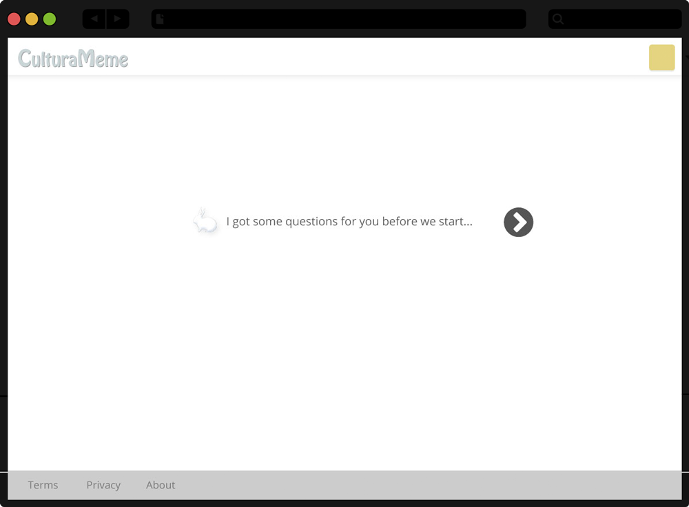
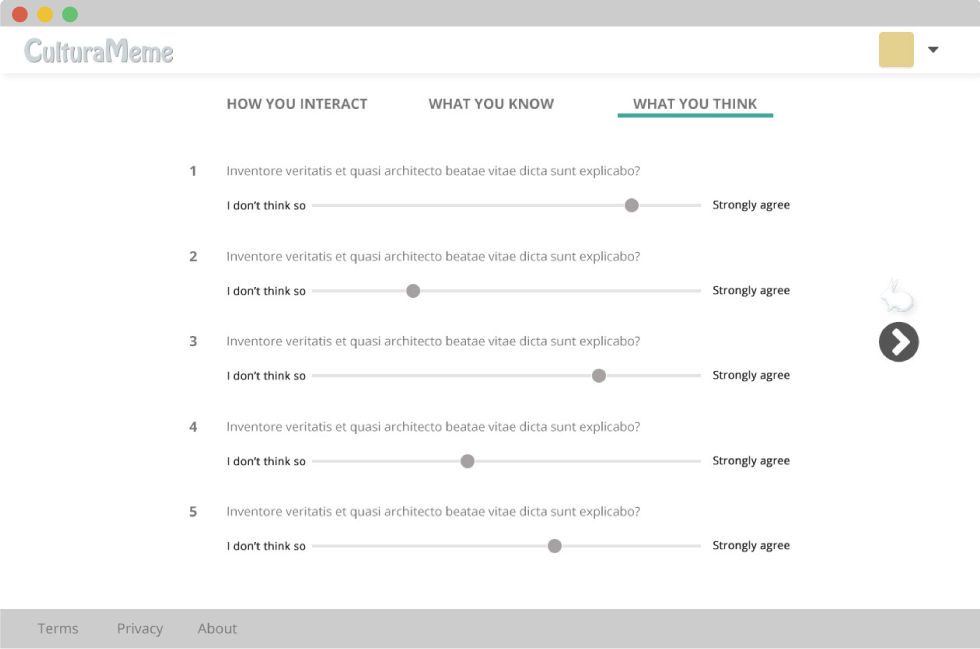
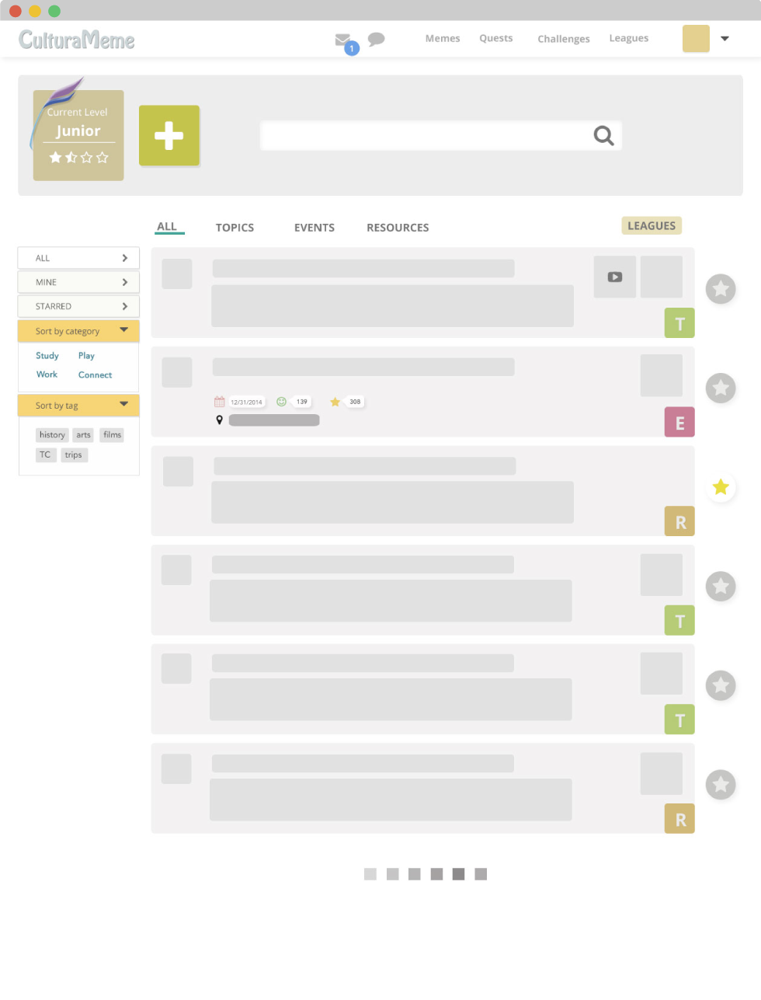
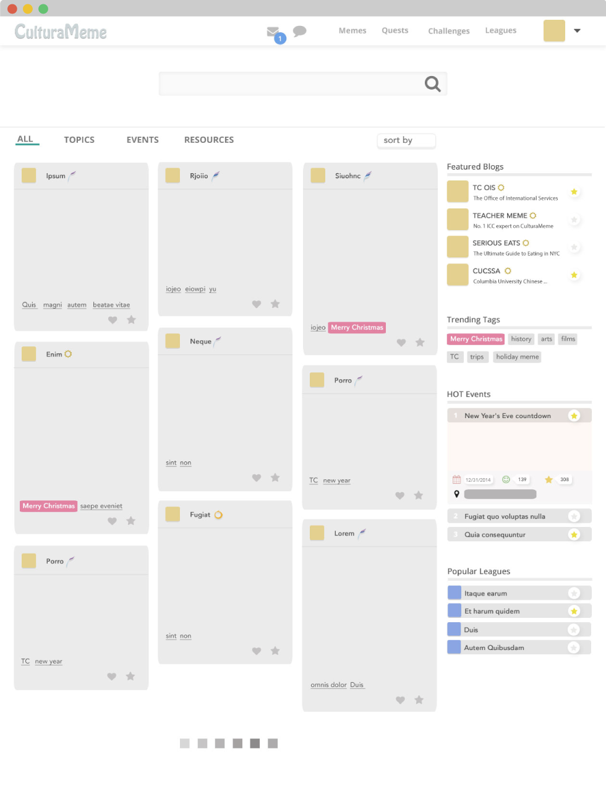
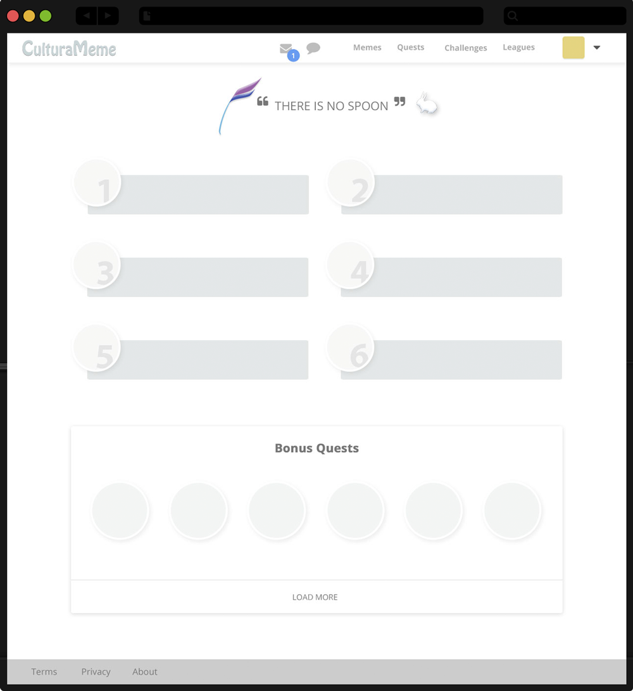
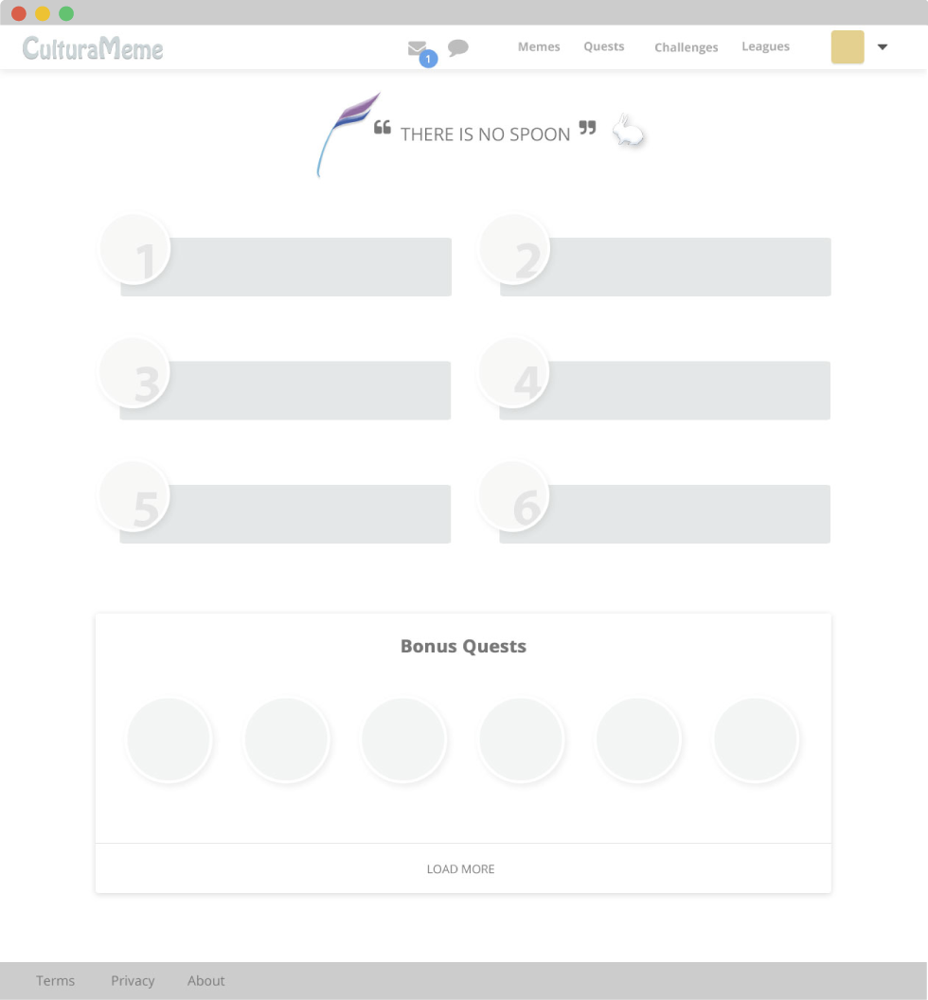
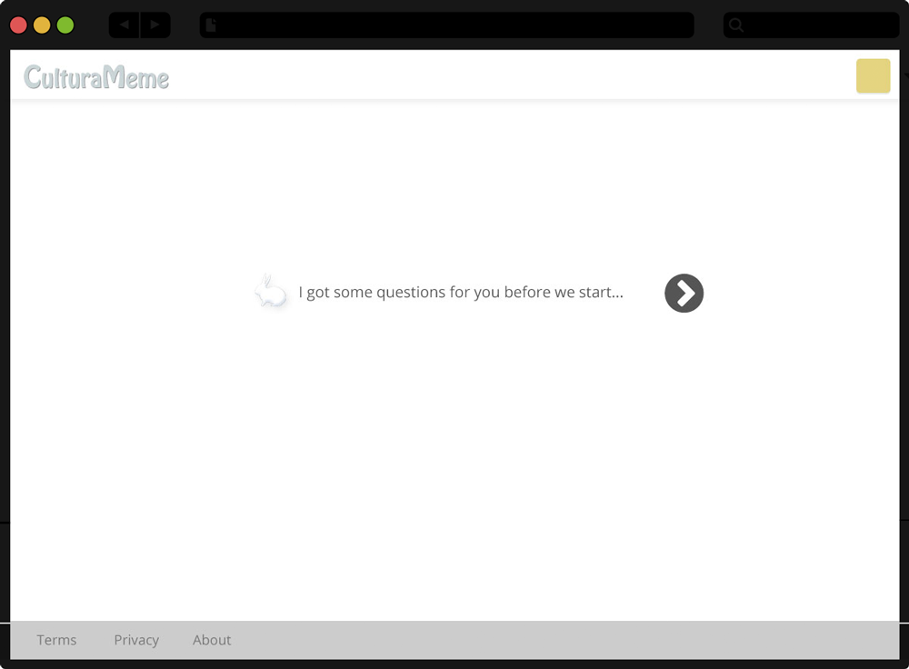
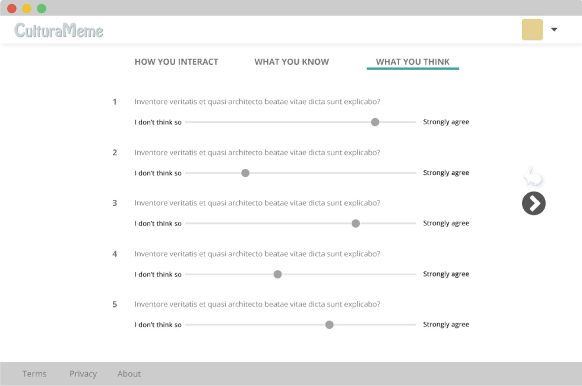
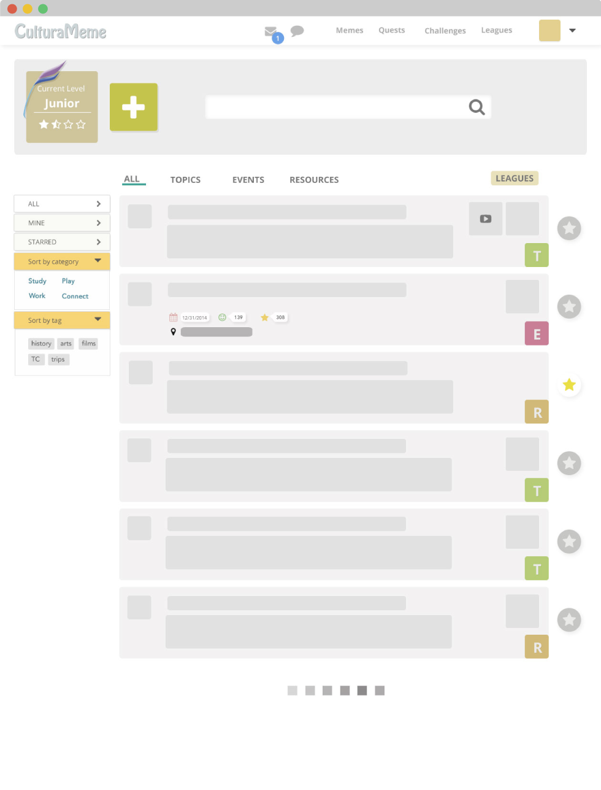
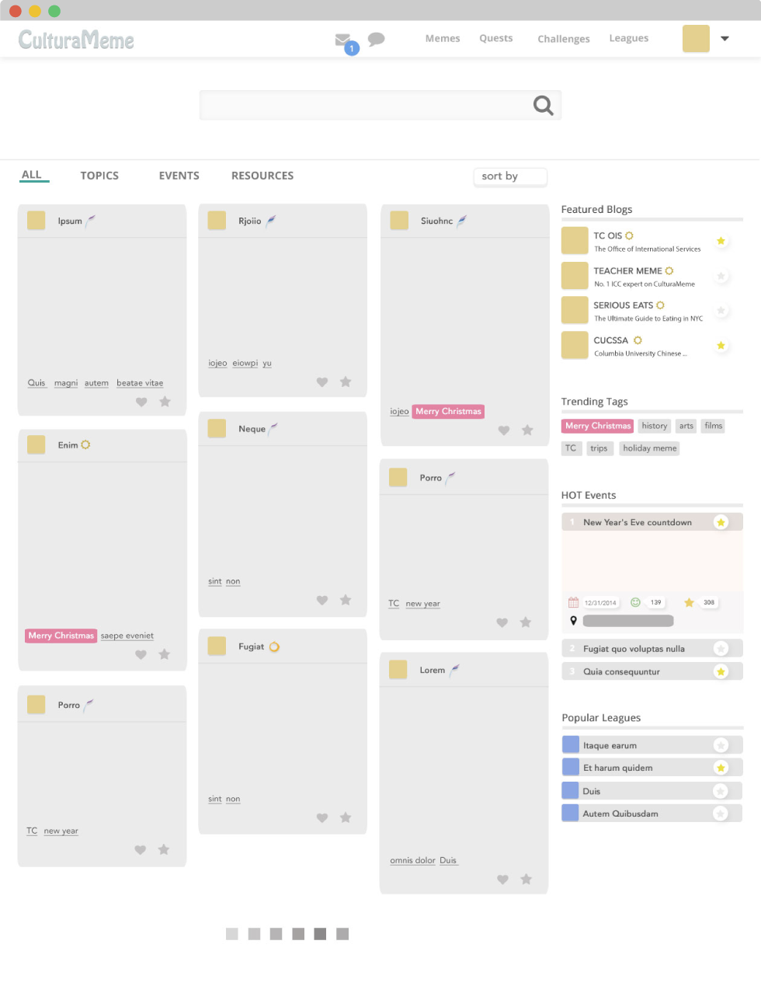
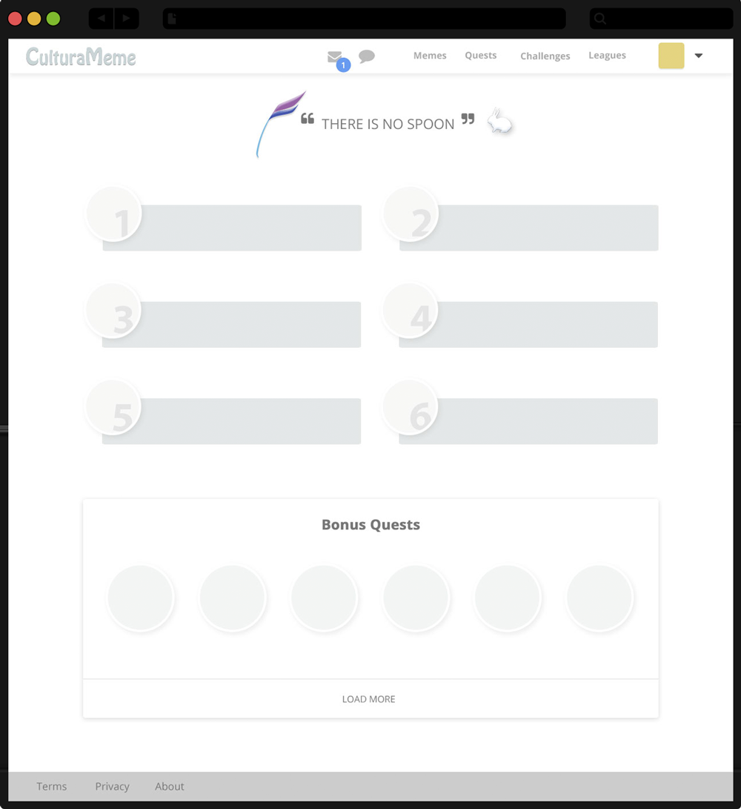
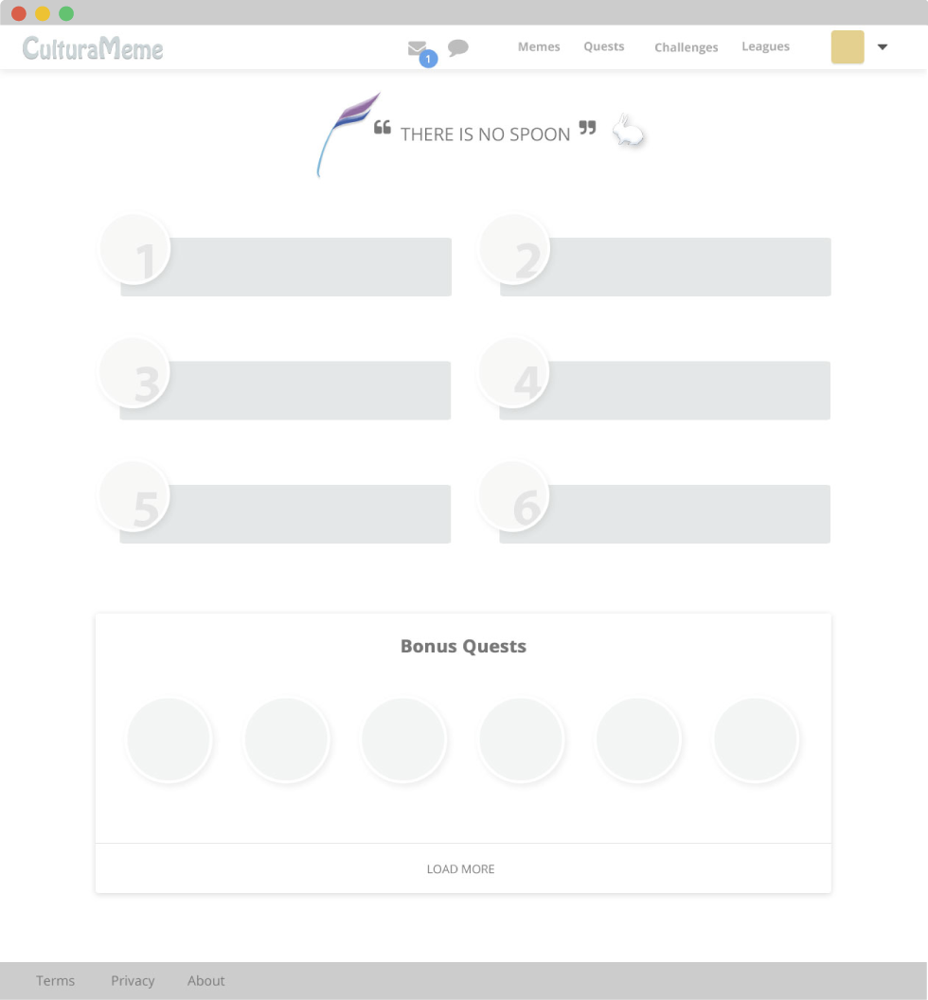
My Contributions
User Research UI/UX Design Prototype
Tools Used
Photoshop Axure
Problem
International students tend not to blend well into a new culture because they lack the Inter-Cultural Competence (ICC). And they lack these skills because there is a lack of a community/resources to teach them these skills.
Solution
An online learning community to help international students
(1) to build a positive attitude towards cultural differences
(2) to gain knowledge of the cultural differences
(3) to improve their social skills in the host culture
Highlights
→ Gamified the experience to improve engagement of learners--encouraging them to grow from ICC novice to ICC expert.
→ Created a transformative experiential learning space -- allowing students to learn by doing, thinking and reflecting
→ Organization of learning content into five major types: Quests, Challenges, Topics, Events and Resources